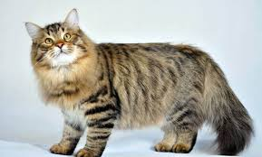

Gatos Persas

El Persa es una raza de gato caracterizada por tener una cara ancha y plana y un gran abundante pelaje de
variados colores. Son considerados comúnmente como gatos aristocráticos (el 75% de los gatos de pedigree
registrados son persas). Los primeros gatos persas fueron introducidos en Italia desde Persia (actual Irán)
en la década de 1620 y a sus
descendientes se les llamó de muchas maneras.1 La rama persa actual se desarrolló a finales de 1800 en
Inglaterra y proviene del gato de Angora turco.
Se caracteriza por ser de un tamaño mediano a grande. Tiene la cabeza redonda, maciza y el cráneo ancho. El
frente es redondeado y los pómulos son fuertes y prominentes. Tiene el hocico corto y el mentón fuerte y
lleno. Los ojos son
grandes, redondos, bien abiertos y entre más separados mejor, de un color muy intenso y brillante. La
posición de la
nariz debe estar asimétrica pero muy importante que se encuentre a la altura de los ojos y profundidad
"nariz (chata)"
para un gato de exposición. Las orejas del gato persa son pequeñas y redondeadas, estas deben estar en
posición "V" asimétricas en la cabeza. En las puntas cubiertas de pelo que nace de dentro hacia afuera y así
pasan desapercibidas y
muy estéticas, confundidas con el pelo largo del lomo, patas y la cabeza.
El cuerpo del gato persa es musculoso y redondeado y tiene una estructura ósea robusta. El mejor tipo de
cuerpo en esta
raza es compacta y se le conoce como "cuerpo Corby" Destaca por encima de las patas que son pequeñas y
gruesas.
Tiene el pelo abundante, espeso, largo y de tacto sedoso. Además, es frecuente que se les caiga bastante
pelo debido a
su abundancia. La cola es peluda y redondeada en el extremo. La cola no debe pasar en distancia por adelante
de la mitad
de su cuerpo (cola corta) Así, podemos decir que los gatos persas no destacan por ser esbeltos sino más bien
macizos,
redondeados y robustos.
Gatos Siberianos

El Siberiano es un gato nativo de la zona oriental de Rusia, específicamente de la fría región de Siberia y
probablemente sea el resultado del cruce entre el gato europeo y el gato salvaje de los bosques siberianos.
Está dentro de la categoría de gatos de pelo semilargo y su abundante pelaje ha permitido que la raza
subsista
mil años
soportando temperaturas de casi 30 °C bajo cero.
Al nacer, y hasta los tres meses de edad, el gato siberiano tiene pelo corto, pero luego desarrolla un
abundante pelaje
largo de característica atigrada y colores que van desde el marrón al gris, con dibujos lineales más oscuros
y
zonas
blancas en mentón y pecho, donde el pelo crece más largo aún, dando el aspecto de collar. Este fenotipo es
común en
invierno, donde el frío y la humedad de la nieve son extremas y la secreción sebácea que rodea al folículo
del
pelo
ayuda a mantener una temperatura adecuada para poder sobrevivir.
Destacan las líneas redondeadas en la cabeza, las orejas, y los ojos. Las patas son anchas y las traseras
son
más largas
que las delanteras. La cola es más ancha en la base que en la punta y tiene el pelo largo y muy denso.
Este tipo de felino es de complexión robusta, pesa entre 4 y 9 kilos, y posee una agilidad y velocidad
dignas
de un gran
cazador.
Su carácter es muy amigable y juguetón, y es uno de los pocos gatos a los que gusta jugar con agua. Destaca,
también,
por su gran inteligencia. Puede crear una estrategia espacial con su entorno para conseguir algo, o bien
lograrlo sobre
la base de su intenso ronroneo y caricias que dirige a su cuidador, al cual es extremadamente fiel. A
diferencia de los
machos, las hembras de gato siberiano pueden presentar actitudes escapistas especialmente en épocas de celo.
Otra
característica especial de este gato, se da al momento de tener crías, lo más común es que un macho se
aparee
con una
sola hembra, y permanecer juntos; y al momento de nacer las crías, lo más probable es que el macho
permanezca
junto a la
hembra para cuidar de las crías; esto casi siempre se da en gatos domésticos.